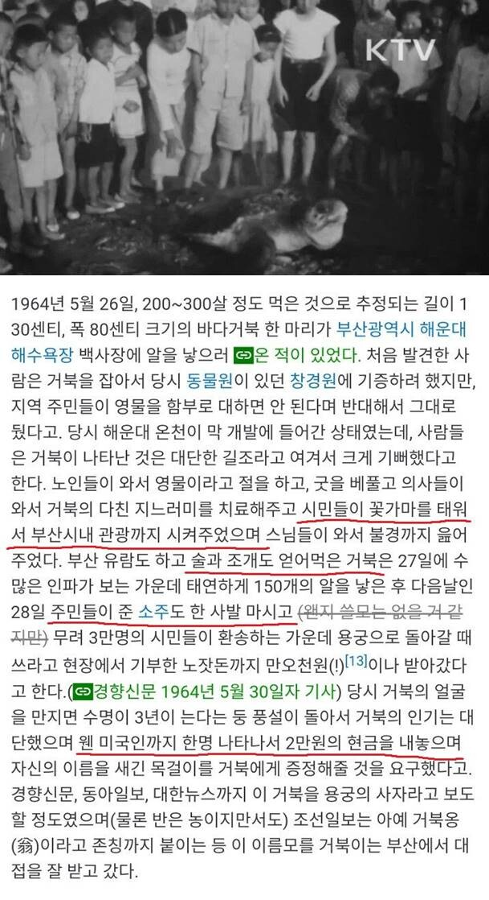

풀코스 만끽후 집으로

풀코스 만끽후 집으로
관종상어라는 말이 개웃김
이런게 낭만 아잉교
상어 임마 이거 물 줄 아네!
거북옹 ㅋㅋㅋㅋ
덕분에 우리가 무역과 배로 먹고사는걸수도 있어
저 썰이 진짜 도파민 자판기 없던 시절의 낭만 같음 ㅋㅋㅋㅋㅋㅋㅋㅋㅋ
술먹인게 진짜 ㅈㄴ웃기네 ㅋㅋㅋㅋㅋㅋㅋㅋㅋㅋ
문서이름 뭐냐 풀버전 궁금하네 ㅋㅋㅋ
나무위키 바다거북 문서 보시면 될 듯
술은 왜먹음 ㅋㅋㅋㅋㅋㅋㅋ
원래 옛날 어르신들은 자기가 좋아하는 동물한테 몰래 술 먹이거나, 술지게미 주는 그런 풍습 있었음.
동물들도 술, 술지게미 좋아해서 50년 전까지만 해도, 집에서 키우는 강아지가 막걸리 술지게미 주워먹고(또는 훔쳐먹고) 취한 채 마당에서 잠드는 풍경 흔했고.
농담인지 뭔진 모르겠지만, 참새 잡는 방법 중 하나가 술지게미 한 숟가락이랑 땅콩 몇 알 그리고 나뭇잎(매체마다 다르긴 함)을 두면 참새가 그거 주워먹고 술에 취해서 걍 빗자루로 주워담으면 된다고 함.
사람에게도 술을 준다 = 후하게 대접한다, 환영한다 그런 의미였잖음.
당시 풍토가 여러 가지 섞인 부산식 환영식이 아니었을까 함.
상돌이 라고 이름 벌써 생겻던데